Remember This Branding

 The graphics designed for the Remember This film use a style inspired from the original Slappy’s Garage logo, to illustrate the personal experience of each skateboarder in the film.
The graphics designed for the Remember This film use a style inspired from the original Slappy’s Garage logo, to illustrate the personal experience of each skateboarder in the film.
My Roles
Brand Strategist, Graphic Designer, Font Designer
Brand Promise
The graphics in Remeber This are skateboarder designed to authentically convey the experiences of the skateboarders who support Slappy’s Garage.
Objective
To design title graphics that visually represent Slappy’s Garage, and the skateboarders featured in the film.
Outcome
Cohesive introduction, title graphic, and name plates for each skateboarder. Each of these elements representing both Slappy’s Garage and the experience of those involved in the Remeber This film.
Target Audience
Skateboarders, Youth (10-25), California (San Diego), Urban, Community/Family
Audience Needs
Skateboarders want to see the sponsored professionals they admire well represented in the Remember This film.

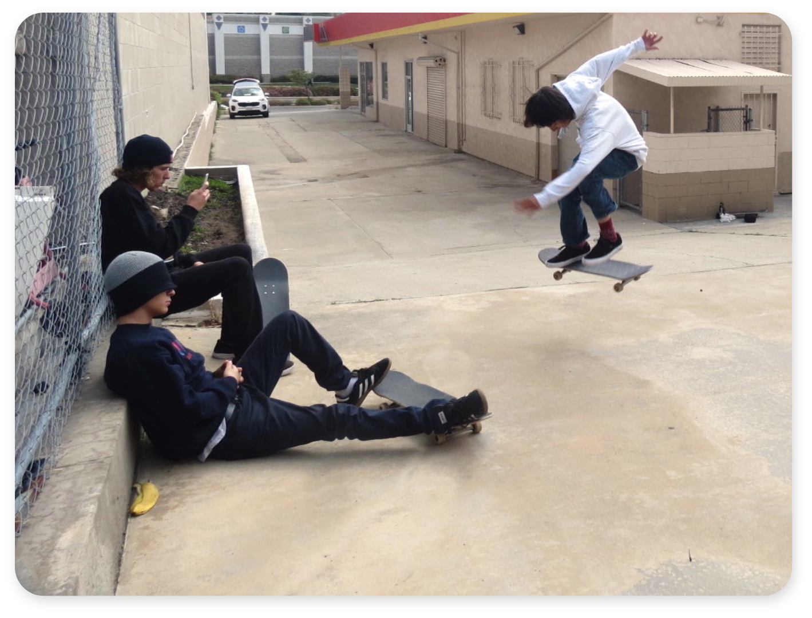
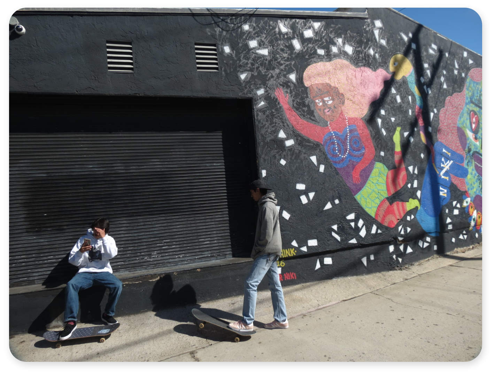
Challenge
Designing deliverables that balance representing Slappy’s Garage and it’s skate team’s authentic skateboarding lifestyle and world-class prestige in the skateboarding industry.
Solution
I solved the challenge by using simple elements to create the marks so that they could be made to look more professional or casual depending on the situation.
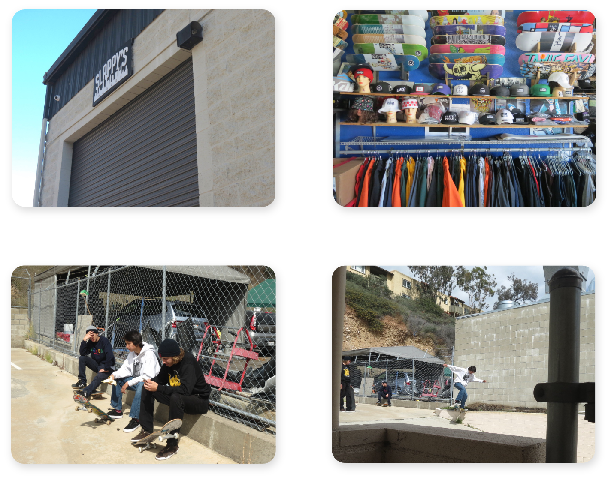
Story
Aside from my personal passion for skateboarding, I chose to do this project because I wanted to collaborate with my friend Daniel Goycooela. I knew that he was filming and editing the Slappy’s Garage film, which didn’t have a title at the time, and I was excited to learn more about what he was doing. I started my process by interviewing Daniel, Jason Carney the shop owner, and a few skateboarders in the video. I asked each of them how they felt about the video, and we discussed their answers together to create a description of the video’s aesthetic. Afterwards I did some more research on the actual skate shop and how it was started, to give me more background information. During this time Daniel, Jason, and the skateboarders in the video decided the title was going to be Remember This. I then used the interview and research to inform sketches and quick prototypes of the mark for the video’s title graphic. I presented these to Daniel and a few of my peers, I noted their feedback edited the prototype and continued to quickly prototype.
Original Mark
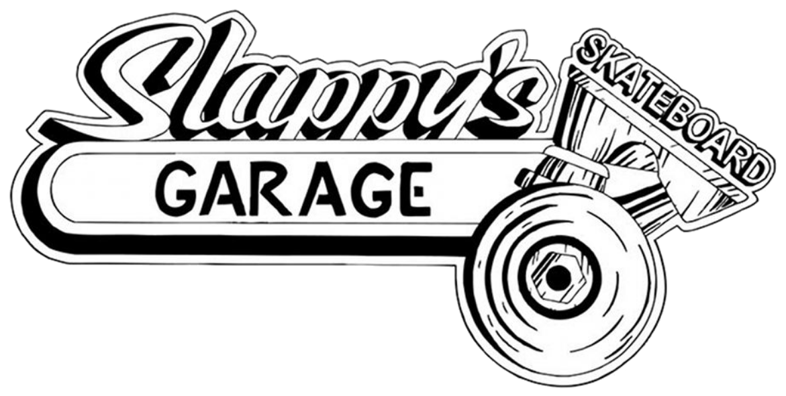
Through my research I learned that the owner of Slappy’s Garage enjoys, working on and restoring old cars. When I learned this I saw the connection of the shop’s main logo to old style auto garage culture. Knowing the story of this mark and it’s style were very important to moving forward with the branding, because I used the style ans form of this mark to influence my designs for the title graphics.
Sketches
 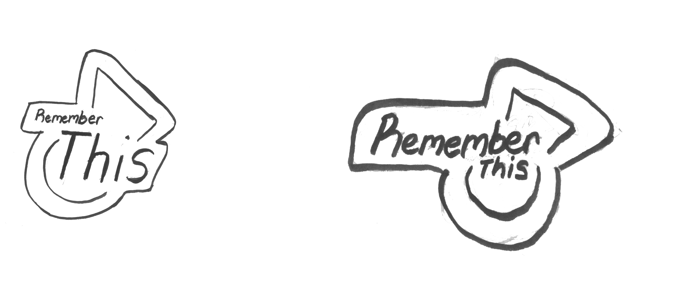
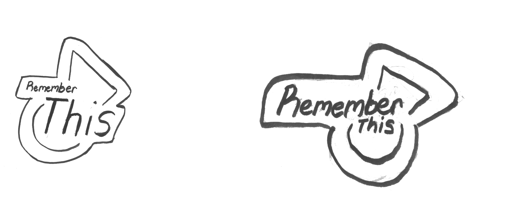
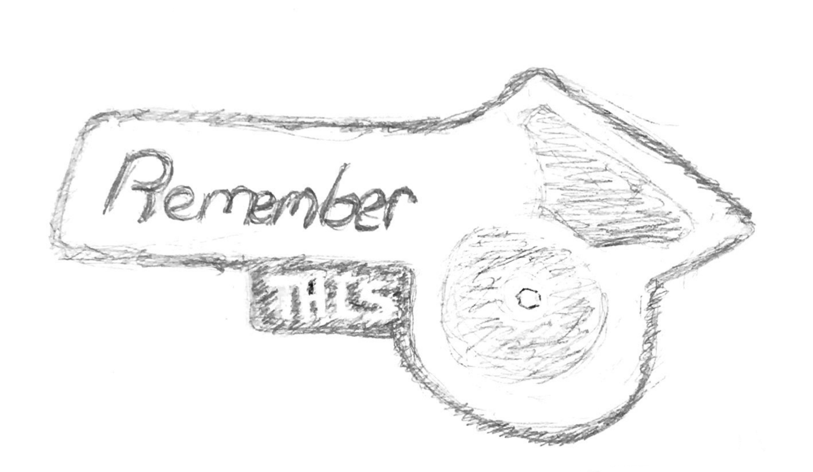
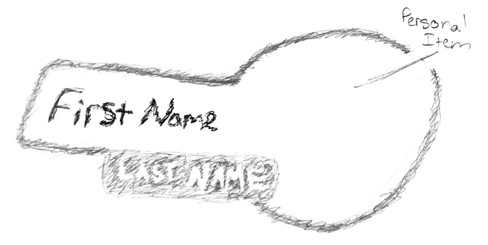
Mark Iterations
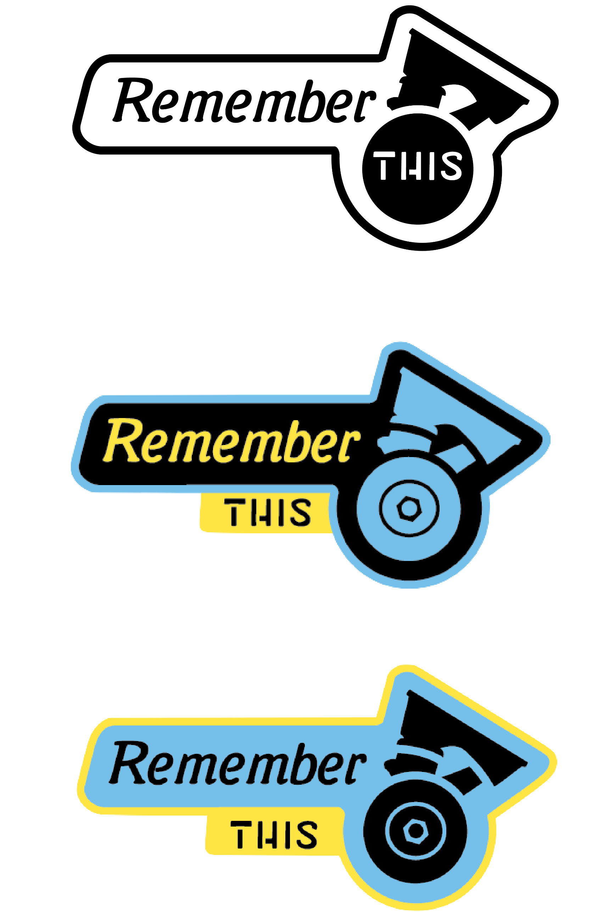 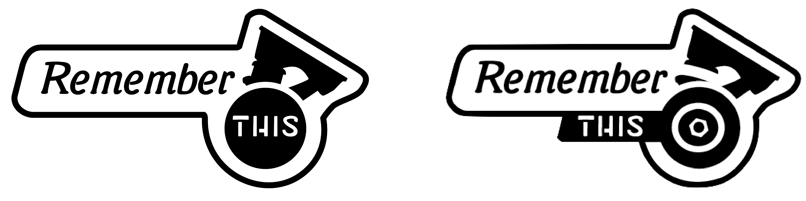

Design Process
I started my work by doing research on local skate brands to observe how each shop expanded their brand into different touchpoints. Most local shops I ecountered were using monochrome color palettes and simple shapes to build their marks. Many skateboarding brands use this style, because simple shapes and color schemes can be manipulated to represent the wide variety of lifestyles in the community. With these iterations, I wanted to keep the mark design and branding consistent with the industry, while specifically representing the old style Slappy’s aesthetic. I chose bold elements to increase impact, while using the style of the original logo, to keep brand equity.
After receiving feedback on these prototypes from my peers and those Slappy’s employees, I continued to refine the mark. Despite the conclusion from my research I experimented with a two color scheme suggested by the filmer and editor Danny Goycooela. These experiments revealed how the black and white mark is much more flexible for collateral branding.. At this point in my process I realized that I needed to make a system of marks influenced by the style of the emblem created. I designed a system of marks so each team rider with a large section in the film has their own title, which features a simple illustration of something personal to them.
Fonts
Both of these fonts are meant to be an updated version of the fonts in the original logo. The first font, Mutter Krause Halbfett, is an old style serif font that matches with the Slappy’s Garage original logo because of its subtle thick thin stroke and slanted axis. I also removed the serifs at the top to keep the font closer to the original logo to maintain brand equity.
The second font I created myself specifically for this project. It’s called Garage Sans and I directly copied the style from the origonal logo to keep the contrast between the larger italic style font and the simple stencil font that the original logo has.
Branding System Prototypes
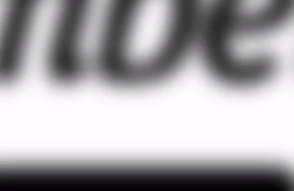
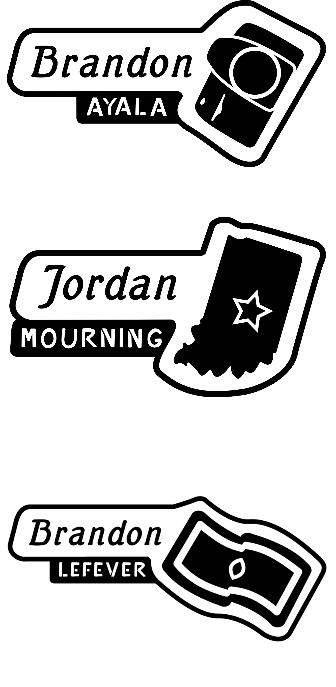
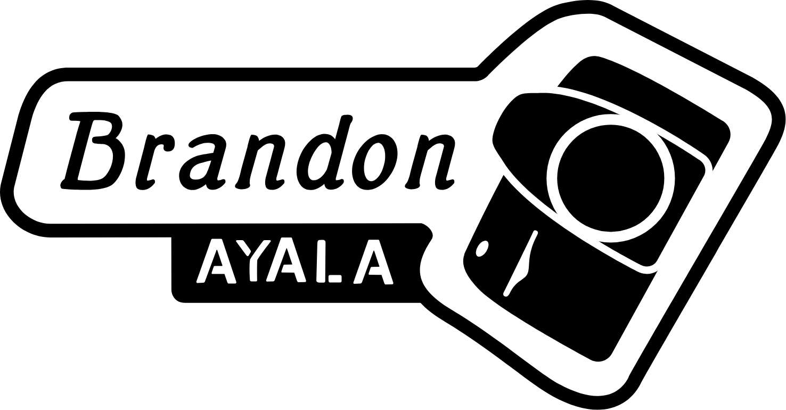
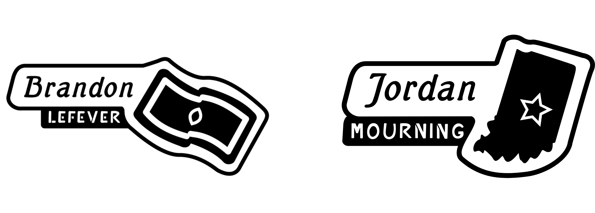
Final Deliverables
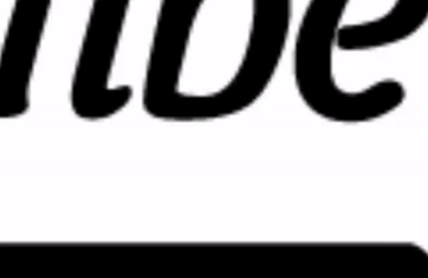
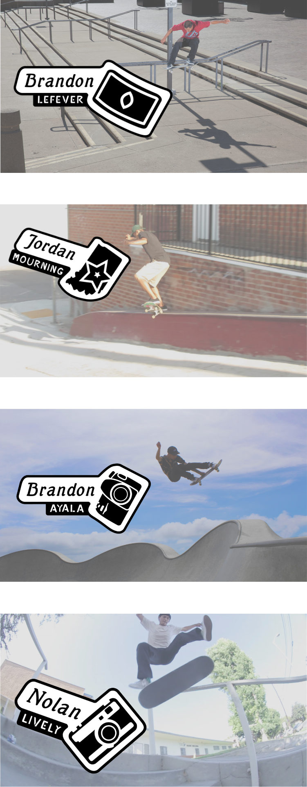